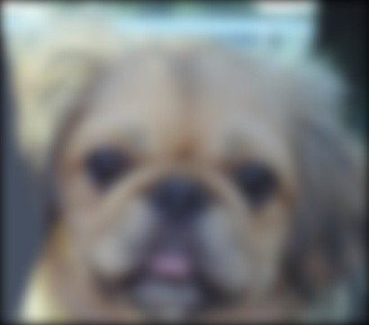
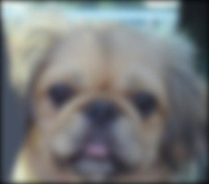
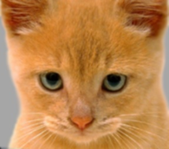

Project 1: Image Filtering and Hybrid Images
This assignment is divided into two parts. In the first part, we write an image filtering function called my_imfilter() that imitates the functionalities of the in-built imfilter() function of MATLAB. In the second part, we use this function to generate hybrid images from given pre-aligned image pairs.
Part 1: Image Filtering
Image processing is a method to perform operations on an image using mathematical operations, in order to get an enhanced image or to extract some useful information from it. Image filtering is a technique of image processing which is used to emphasize or remove certain feature of an image. Filtering is a neighborhood operation since the value of any pixel in the output image is determined by applying some algorithm to the neighboring pixels in the input image.
Linear filtering is filtering in which the value of an output pixel is a linear combination of the values of the pixels in the input pixel's neighborhood. It is accomplished through an operation called convolution. In MATLAB, the in-built imfilter() function is used for filtering of multidimensional images. The syntax is B = imfilter(A,h) where A and h represent the image and the filter respectively.
As part of this project, we implement our version of the imfilter() function as my_imfilter(). The algorithm of the project is as follows:
Algorithm with code snippets
- Read input image and filter
- Check if input image is RGB or Grayscale:
- If image is RGB, split into R, G and B channels and apply step 3 for each channel
- If image is grayscale, continue to step 3
- Call the my_imfilter function inside which the following steps will be executed:
- Check if filter has odd dimensions
- Pad the input image
- Carry out filtering
- Un-pad the filtered image
%check if filters have odd dimensions fsize=size(filter); fxsize=fsize(1); % fsize(1) returns no. of rows in filter matrix fysize=fsize(2); % fsize(2) returns no. of columns in filter matrix if((mod(fxsize,2) ==0) || (mod(fysize,2) ==0)) error('Filter must have odd dimensions.'); end% calculate padsize - padding needs to be at least half as long as the filter length padxsize = ((fxsize+1)/2) - 1; padysize = ((fysize+1)/2) - 1; % padding the image with zeroes image = padarray(img1, [padxsize,padysize]); imgsize=size(image); imgxsize=imgsize(1); imgysize=imgsize(2);% apply filter to image for r=1:imgxsize-fxsize+1 for c=1:imgysize-fysize+1 myOutput(floor(fxsize/2)+r,floor(fysize/2)+c)=sum(sum(image(r:r+fxsize-1, c:c+fysize-1) .* filter)); end end% un-pad output image matrix conv=myOutput(padxsize+1:end-padxsize, padysize+1:end-padysize); - If image is RGB, combine all 3 channels back into a single image
- Display image
Several filtering techniques were applied on an image of a cat and the results are as shown below:

Input image |

Small blur with box filter |

Large blur with Gaussian filter |

Oriented filter (Sobel operator) |
High-pass filter (Discrete Laplacian) |
High-pass alternative for filter |
Part 2: Hybrid Images
A hybrid image is a picture that is generated by superimposing low-spatial frequencies of one image and high-spatial frequencies of another image to form static images with two interpretations which vary according to viewing distance.
In this project, we use a Gaussian filter to to generate low-frequency version of first image. Similarly, the low-frequency version of the second image is calculated and subtracted from the original image to obtain the high-frequency version of the second image. The two new images are then added together to generate the hybrid image.
Algorithm with code snippets
- Read the two images
- Decide the cutoff-frequency
- Generate a filter using fspecial() method
- Generate smoothened version of image-1
- Carry out following steps on image-2:
- Generate smoothened version of image-2
- Subtract this from the original image to obtain sharpened version of image-2
- Add the results of steps 4 and 5 to generate a hybrid image
low_frequencies=my_imfilter(image1,filter);
high_frequencies=image2-(my_imfilter(image2,filter));
hybrid_image=low_frequencies+high_frequencies;
In the following example, we have 2 images of a cat and a dog. In the process of constructing an hybrid image, a high-frequency version of the cat is combined with the low-frequency version of the dog and both are combined to obtain the desired result. The result obtained varies with variance in the paramaters called cutoff-frequency, which is different for different pair of images.
In the example below, the hybrid image looks like a cat when seen up close while it seems like a dog from afar.
 -->
-->
 +
+
 -->

-->

|
 Cat-Dog Hybrid Image with cutoff-frequency=7 |
The results for four other pairs of images are as shown below (in clockwise direction):
- Mototcycle-Bicycle Hybrid Image (cutoff-frequency = 6)
- Marilyn-Einstein Hybrid Image (cutoff-frequency = 5)
- Fish-Submarine Hybrid Image (cutoff-frequency = 5)
- Bird-Plane Hybrid Image (cutoff-frequency = 5)
Observations
- Padding with zeros vs Replicated padding
I have the inbuilt function padarray() in MATLAB to pad the input image to the my_imfilter() function. By default, the function pads the input image with zeros on all sides. However, zero being the numeric representation of the color black, the image gets a black border on all sides which remains significant even after the filter is applied and the padding is undone. This difference is most evident in the output image for Gaussian filter. I have implemented zero padding in the my_imfilter() function to imitate the default behavior of the padarray() function. Had the code been written for replicated padding, the output would have been as follows:

Input image
Small blur with box filter
Large blur with Gaussian filter
Oriented filter (Sobel operator)
High-pass filter (Discrete Laplacian)
High-pass alternative for filter
- Interchanging images while constructing hybrid images
The script for hybrid images is written such that a smoothening filter is applied on the first image and a sharpening filter is applied on the second image to construct a hybrid image. However, I observed that the result varies significantly based on which image is smoothened and which image is sharpened. The swapping of the two images also calls for a change in the cutoff-frequency for construction of the hybrid image. For example, consider the following case of cat and dog to observe the difference caused by swapping images:
vs
Dog and Cat, cutoff frequency=7 Cat and Dog, cutoff frequency=8 - Variations in cutoff-frequencies
The SIGGRAPH 2006 paper by Oliva, Torralba, and Schyns suggests that we could use two cutoff frequencies, one for each image when constructing a hybrid image. The results obtained are slightly better when cutoff frequencies are tuned separately for every image, as shown in the comparison below. To the left is the hybrid image generated from pictures of Marilyn and Einstein with a common cutoff-frequency=5. To the right is the hybrid image generated when the cutoff-frequency for the former is 7 and that for the latter is 3.
vs
Marilyn and Einstein, cutoff frequency=5 Marilyn(cutoff frequency=7) and Einstein(cutoff frequency=3)
Extra
I tried experimenting with two new images, apart from the ones given in the dataset. Alignment of images and their dimensions are two major factors to be considered while constructing hybrid images. Hence, it has been ensured that the two images were aligned and of the same dimensions. The first image is that of farfalle pasta while the second is of a bow-shaped napkin. The results obtained are as follows:
Takeaways
1. Reflected padding is better than zero-padding in image filtering process since it does away with the dicontinuity in the image caused by black borders.
2. In a pair of images used to generate hybrid images, smoothening and sharpening filters can be applied on either images. However, one yields better results than the other.
3. Separately tuned cutoff-frequencies for individual images generate better hybrid images than a common cutoff-frequency.